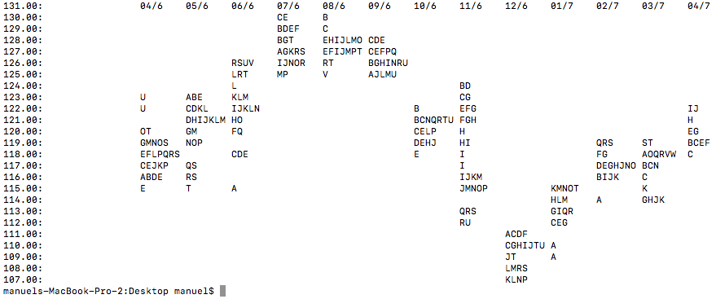

Practical walkthroughs on machine learning, data exploration and finding insight.
Resources

Let’s build a market profile chart using Python in about 30 lines of code. This is a bare version of J.P Steidlmayer’s charting system, but should give you a good idea of market distribution within a particular time frame and where the market spent most of its time. Here we’ll focus on monthly distributions using end-of-day data from Yahoo Finance.
Yahoo's ichart service is down. You'll need to use Google Finance instead - source code at end of blog has been udpdate.
A Market Profile is an intra-day charting technique (price vertical, time/activity horizontal) devised by J. Peter Steidlmayer, a trader at the Chicago Board of Trade (CBOT), ca 1959-1985. Steidlmayer was seeking to evaluate market value as it developed in the day time frame. Steidlmayer’s charts displayed a bell shape, fatter at the middle prices, with activity trailing off at the higher and lower prices. In this structure he recognized the ‘Normal’, gaussian distribution he had met with in college statistics… (Wikipedia: Market Profile)
J.P Steidlmayer would record intra-day pit action using a sideways distribution plot. This would give him insight as to where price spent the most time and where it struggled. In a lot of cases, the chart would form a normal distribution. Armed with this information along with visual and audible cues from floor traders, he could easily figure out when markets were stretched and how far the price would retract with high probability. And if the pits got excited around the distribution tails, he would stick it out assuming that new information came in and could potentially shake things up.
246.00
244.00: B
242.00: BCMNPQRTU
240.00: CNOPR
238.00: DE
236.00: E
234.00:
Today, unfortunately, there really isn’t any pit trading left to yield cues, but this is still a great way of looking at the market, better, or at least just as good as line or candlestick charts. Maybe in another video we’ll look at building an ‘excitement’ indicator to capture unusual market speed changes, price jumps, abrupt volume changes, etc. In the Market Profile we will build here, we will capture a year’s worth of trading using monthly profiles and daily letters.
Let’s look at the important components of the Market Profile code (for more details see the YouTube video). The Print_Market_Profile takes 5 parameters: the symbol you want to visualize, the height precision (or dollar precision), the time-frame frequency, and the market start and end date.
The market data is downloaded from Yahoo Finance using the pandas_datareader library:
fin_prod_data = pdr.get_data_yahoo(symbol.upper(), start_date, end_date)Which returns:
In [35]: fin_prod_data.head()
Out[35]:
Open High Low Close Volume \
Date
2016-04-01 116.080002 116.980003 115.550003 116.930000 10405400
2016-04-04 116.669998 116.730003 116.070000 116.150002 7643700
2016-04-05 117.760002 117.930000 117.150002 117.660004 8865900
2016-04-06 116.699997 117.389999 116.260002 116.940002 7549400
2016-04-07 118.650002 118.849998 115.000000 118.610001 11900500
Adj Close
Date
2016-04-01 116.930000
2016-04-04 116.150002
2016-04-05 117.660004
2016-04-06 116.940002
2016-04-07 118.610001
...height_precision variable then round those values. The function defaults to dollar amounts, dropping everything after the decimal point. If a stock is trading in the $10 range, you will need to use a height_precision larger than one, and for a stock trading in the 100s, a height_precision smaller than one. We use Pandas’ TimeGrouper function to extract the end dates for each profile to know when to stop building a current profile and move on to the next.
time_groups = fin_prod_data.groupby(pd.TimeGrouper(freq=frequency))['Adj Close'].mean()In [32]: time_groups
Out[32]:
Date
2016-04-30 118.719524
2016-05-31 120.280477
2016-06-30 121.935908
2016-07-31 127.836500
2016-08-31 127.728261
2016-09-30 126.546667
2016-10-31 120.735239
2016-11-30 117.827619
2016-12-31 109.667143
2017-01-31 113.764501
2017-02-28 117.631579
2017-03-31 117.270870
2017-04-30 120.774167
Freq: M, Name: Adj Close, dtype: float64The entire Market Profile is built and stored using a defaultdict object. We use the price as key and append characters, whether a profile character or a blank space. All price levels get characters, though most are spaces and tabs. We loop through each row in our market action data set and add our letters accordingly. The first entry of every new profile starts with ASCII value 65, which is character ‘A’, and we increment the character for every new time period (i.e. ‘A’, then ‘B’, then ‘C’, etc). Keep in mind that for large profiles containing lots of time periods, an ACSCII reset may be required once all characters are used (after ASCII 126).
Once we jump into a new TimeGrouper, the current profile is finished and a new one is started. This means bufferering all empty spaces vertically, adding a tab column, and resetting the ASCII character back to letter ‘A’. That’s really it.
Here is a look at the mp dictionary and its content:
In [44]: mp
Out[44]:
defaultdict(str,
{107: '\t \t \t \t \t \t \t \t \tK \t \t',
108: '\t \t \t \t \t \t \t \t \tJLMS \t \t',
109: '\t \t \t \t \t \t \t \t \tJT \t \t',
110: '\t \t \t \t \t \t \t \t \tACGHIJ\tAB \t',
111: '\t \t \t \t \t \t \t \t \tACD \t \t',
112: '\t \t \t \t \t \t \t \tQRTU \t \tCEFG \t',
113: '\t \t \t \t \t \t \t \tQRST \t \tFGIQR\t',
114: '\t \t \t \t \t \t \t \t \t \tHKLM \tA',
115: '\tE \t \tA \t \t \t \t \tNP \t \tKMNOT\tA',
116: '\tADE \tRS \t \t \t \t \t \tIJKLM\t \t \tDHIJK',
117: '\tCDEJK \tQS \t \t \t \t \t \tIL \t \t \tDEGHJKNO',
118: '\tEFINPRS\t \tCDE \t \t \t \tE \tI \t \t \tP',
119: '\tINOS \tNP \t \t \t \t \tDE \tI \t \t \tQRS',
120: '\tT \tFGJM \tFGPQ \t \t \t \tCNOPR \tH \t \t \t',
121: '\tT \tDFGIJM\tGHO \t \t \t \tBCMNPQRTU\tGH \t \t \t',
122: '\tU \tBCEK \tIJKLMN\t \t \t \tB \tAFG \t \t \t',
123: '\tU \tABE \tKLMN \t \t \t \t \tG \t \t \t',
124: '\t \t \tL \t \tW \tAK \t \tB \t \t \t',
125: '\t \t \tLRT \tP \tV \tAJLMU\tA \t \t \t \t',
126: '\t \t \tRSU \tIJKNR \tRT \tFGNR \t \t \t \t \t',
127: '\t \t \t \tGIKLNRS\tJT \tFN \t \t \t \t \t',
128: '\t \t \t \tBT \tAHIJLMN\tCD \t \t \t \t \t',
129: '\t \t \t \tBDEFT \tAJ \t \t \t \t \t \t',
130: '\t \t \t \tC \t \t \t \t \t \t \t',
131.0: '\t04/6 \t05/6 \t06/6 \t07/6 \t08/6 \t09/6 \t10/6 \t11/6 \t12/6 \t01/7 \t02/7'})And here is the final display:
262.00: 04/6 05/6 06/6 07/6 08/6 09/6 10/6 11/6 12/6 01/7 02/7
260.00: C
258.00: BDEFT AJ
256.00: BT AHIJLMN CD
254.00: GIKLNRS JT FN
252.00: RSU IJKNR RT FGNR
250.00: LRT P V AJLMU A
248.00: L W AK B
246.00: U ABE KLMN G
244.00: U BCEK IJKLMN B AFG
242.00: T DFGIJM GHO BCMNPQRTU GH
240.00: T FGJM FGPQ CNOPR H
238.00: INOS NP DE I QRS
236.00: EFINPRS CDE E I P
234.00: CDEJK QS IL DEGHJKNO
232.00: ADE RS IJKLM DHIJK
230.00: E A NP KMNOT A
228.00: HKLM A
226.00: QRST FGIQR
224.00: QRTU CEFG
222.00: ACD
220.00: ACGHIJ AB
218.00: JT
216.00: JLMS
214.00: K import sys
import pandas as pd
import datetime
import numpy as np
from pandas_datareader import data, wb
import pandas_datareader as pdr
from collections import defaultdict
def Print_Market_Profile(symbol, height_precision = 1,
frequency='m', start_date=None, end_date=None):
# We will look at stock prices over the past year
if start_date == None:
# get a year's worth of data from today
start_date = datetime.date.today() - datetime.timedelta(days=365.24)
# set date to first of month
start_date = start_date.replace(day=1)
if end_date == None:
end_date = datetime.date.today()
fin_prod_data = pdr.get_data_google(symbol.upper(), start_date, end_date)
fin_prod_data[('High')] = fin_prod_data[('High')] * height_precision
fin_prod_data[('Low')] = fin_prod_data[('Low')] * height_precision
fin_prod_data = fin_prod_data.round({'Low': 0, 'High': 0})
time_groups = fin_prod_data.groupby(pd.TimeGrouper(freq=frequency))['Adj Close'].mean()
current_time_group_index=0
from collections import defaultdict
mp = defaultdict(str)
char_mark = 64
# build dictionary with all needed prices
tot_min_price=min(np.array(fin_prod_data['Low']))
tot_max_price=max(np.array(fin_prod_data['High']))
for price in range(int(tot_min_price), int(tot_max_price)):
mp[price]+=('\t')
# add max price as it will be ignored in for range loop above
mp[tot_max_price] = '\t' + str(time_groups.index[current_time_group_index])[5:7] + '/' + str(time_groups.index[current_time_group_index])[3:4]
for x in range(0, len(fin_prod_data)):
if fin_prod_data.index[x] > time_groups.index[current_time_group_index]:
# new time period
char_mark=64
# buffer and tab all entries
buffer_max = max([len(v) for k,v in mp.iteritems()])
current_time_group_index += 1
for k,v in mp.iteritems():
mp[k] += (chr(32) * (buffer_max - len(mp[k]))) + '\t'
mp[tot_max_price] += str(time_groups.index[current_time_group_index])[5:7] + '/' + str(time_groups.index[current_time_group_index])[3:4]
char_mark += 1
min_price=fin_prod_data['Low'][x]
max_price=fin_prod_data['High'][x]
for price in range(int(min_price), int(max_price)):
mp[price]+=(chr(char_mark))
sorted_keys = sorted(mp.keys(), reverse=True)
for x in sorted_keys:
# buffer each list
print(str("{0:.2f}".format((x * 1.0) / height_precision)) + ': \t' + ''.join(mp[x]))
def main():
# customize ingestion of agruments to handle
# frequency: http://nullege.com/codes/search/pandas.TimeGrouper
if (len(sys.argv[1:]) == 1):
symbol = sys.argv[1:][0]
Print_Market_Profile(symbol)
elif (len(sys.argv[1:]) == 2):
symbol = sys.argv[1:][0]
height_precision = float(sys.argv[1:][1])
Print_Market_Profile(symbol, height_precision)
elif (len(sys.argv[1:]) == 3):
symbol = sys.argv[1:][0]
height_precision = float(sys.argv[1:][1])
frequency = sys.argv[1:][2]
Print_Market_Profile(symbol, height_precision, frequency)
if __name__ == "__main__":
main()